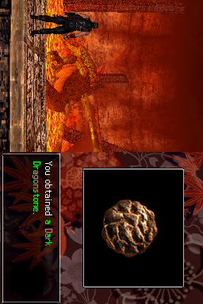
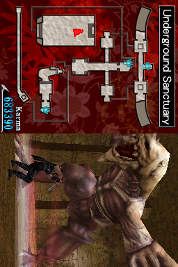
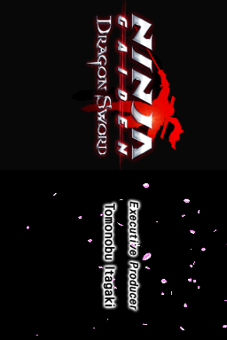
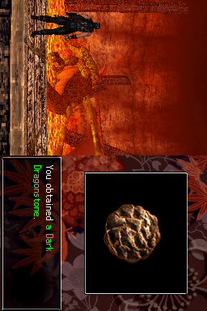
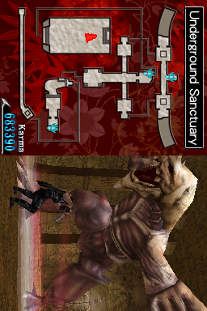
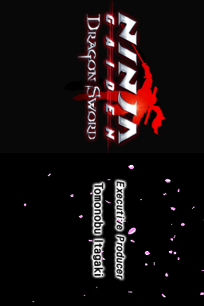

Ninja Gaiden: Dragon Sword

Complete on 2022-06-28
3 / 5
Release Date: Mar 25, 2008
Meta Score: 83
Screenshots
 





Notes
Ninja Gaiden: Dragon Sword is an adaptation of the Ninja Gaiden series for the DS. Specifically the later 3D Ninja Gaiden games that are more like spectacle fighters rather than the original 2D platformers.
Ninja Gaiden: Dragon Sword is our first instance of contrived subtitles that abbreviate to DS - Ninja Gaiden: Dragon Sword = NG:DS. We'll be seeing plenty of them in the DS challenge.
When playing, you have the DS oriented sideways again, and control mostly using the touch screen. Touch to run around, slash or tap enemies to attack them, etc. Press any physical button to block. There are some special moves on specific gesture sequences too.
The game has some really cool elements like boss fights with big boss enemies and the camera shifting to a closer in perspective. Boss fights felt dramatic and fun generally. The special magic moves feel really powerful and cool to fire off, although the "draw the symbol" minigame was a bit pointless since you're not timed or risking damage as you do it.
There are some criticisms to make. A lot of the time I felt like I was doing the touch screen equivalent of button mashing and doing just fine in combat.
Combat also gets fairly repetetive quickly as you're almost always fighting really large waves of the same few enemy types. Seriously, almost every room will have wave after wave of enemies spawning. I got into the habit of running through a lot of rooms where the fight wasn't mandatory to progress. Enemy variety over the whole game is ok, but each level only has 3-4 types of enemies present so they get stale within each level.
Oh I should probably mention the game has a story. It's nothing to write home about, big boobed demon ladies are messing things up and kidnapping your (love interest or sister) (I missed which one it was) and you (a ninja) have to collect some mcguffins and then use the titular Dragon Sword to stop them. It's an excuse to murder a bunch of demons and enemy ninjas.
The game isn't too tough, there are plenty of save points that fill up your health and magic, and I was able to plough through the game without many deaths. The bosses get tougher later on though.
Honestly NG:DS exceeded the expectations I formed after I assessed what kind of game it was. It plays out better than I would have thought "spectacle fighter using touch controls" would. I think it might have ended up better if they had just gone with classic button controls and could have made the game feel tighter and more precise.